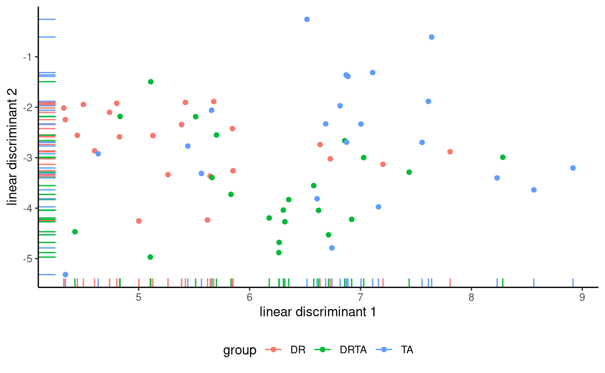

9 Repeated measures and multivariate models
So far, all experiments we have considered can be classified as between-subject designs, meaning that each experimental unit was assigned to a single experimental (sub)-condition. In many instances, it may be possible to randomly assign multiple conditions to each experimental unit. For example, an individual coming to a lab to perform tasks in a virtual reality environment may be assigned to all treatments. There is an obvious benefit to doing so, as the participants can act as their own control group, leading to greater comparability among treatment conditions.
For example, consider a study performed at Tech3Lab that looks at the reaction time for people texting or talking on a cellphone while walking. We may wish to determine whether disengagement is slower for people texting, yet we may also postulate that some elderly people have slower reflexes.
In a between-subjects design, subjects are nested within experimental condition, as a subject can only be assigned a single treatment. In a within-subjects designs, experimental factors and subjects are crossed: it is possible to observed all combination of subject and experimental conditions.
By including multiple conditions, we can filter out the effect due to subject, much like with blocking: this leads to increased precision of effect sizes and increased power (as we will see, hypothesis tests are based on within-subject variability). Together, this translates into the need to gather fewer observations or participants to detect a given effect in the population and thus experiments are cheaper to run.
There are of course drawbacks to gathering repeated measures from individuals. Because subjects are confronted with multiple tasks, there may be carryover effects (when one task influences the response of the subsequent ones, for example becoming better as manipulations go on), period effects (fatigue, a decrease in acuity), and permanent changes in the subject condition after a treatment or attrition (loss of subjects over time).
To minimize potential biases, there are multiple strategies one can use. Tasks are normally presented in random order among subjects to avoid confounding, or using a balanced crossover design and include the period and carryover effect in the statistical model via control variables so as to better isolate the treatment effect. The experimenter should also allow enough time between treatment conditions to reduce or eliminate period or carryover effects and plan tasks accordingly.
If each subject is assigned to an experimental condition only once, one good way to do this is via counterbalancing. We proceed as follows: first, enumerate all possible orders of the condition and then assign participants as equally as possible between conditions. For example, with a single within-factor design with three conditions \(A, B, C\), we have six possible orderings (either \(ABC\), \(ACB\), \(BAC\), \(BCA\), \(CAB\) or \(CBA\)). Much like other forms of randomization, this helps us remove confounding effects and let’s us estimate what is the average effect of task ordering on the response.
There are multiple approaches to handling repeated measures. The first option is to take averages over experimental condition per subject and treat them as additional blocking factors, but it may be necessary to adjust the resulting statistics. The second approach consists in fitting a multivariate model for the response and explicitly account for the correlation, otherwise the null distribution commonly used are off and so are the conclusions, as illustrated with the absurd comic displayed in Figure 11.1.
Multivariate analysis of variance (MANOVA) leads to procedures that are analogous to univariate analysis of variance, but we now need to estimate correlation and variance parameters for each measurement separately and there are multiple potential statistics that can be defined for testing effects. While we can benefit from the correlation and find differences that wouldn’t be detected from univariate models, the additional parameters to estimate lead to a loss of power. Finally, the most popular method nowadays for handling repeated measures is to fit a mixed model, with random effects accounting to subject-specific characteristics. By doing so, we assume that the levels of a factor (here the subject identifiers) form a random sample from a large population. These models can be difficult to fit and one needs to take great care in specifying the model.
9.1 Repeated measures
We introduce the concept of repeated measure and within-subject ANOVA with an example.
Example 9.1 (Happy fakes) We consider an experiment conducted in a graduate course at HEC, Information Technologies and Neuroscience, in which PhD students gathered electroencephalography (EEG) data. The project focused on human perception of deepfake image created by a generative adversarial network: Amirabdolahian and Ali-Adeeb (2021) expected the attitude towards real and computer generated image of people smiling to change.
The response variable is the amplitude of a brain signal measured at 170 ms after the participant has been exposed to different faces. Repeated measures were collected on 9 participants given in the database AA21, who were expected to look at 120 faces. Not all participants completed the full trial, as can be checked by looking at the cross-tabs of the counts
data(AA21, package = "hecedsm")
xtabs(~stimulus + id, data = AA21) id
stimulus 1 2 3 4 5 6 7 8 9 10 11 12
real 30 32 34 32 38 29 36 36 40 30 39 33
GAN1 32 31 40 33 38 29 39 31 39 28 35 34
GAN2 31 33 37 34 38 29 34 36 40 33 35 32The experimental manipulation is encoded in the stimuli, with levels control (real) for real facial images, whereas the others were generated using a generative adversarial network (GAN) with be slightly smiling (GAN1) or extremely smiling (GAN2); the latter looks more fake. While the presentation order was randomized, the order of presentation of the faces within each type is recorded using the epoch variable: this allows us to measure the fatigue effect.
Since our research question is whether images generated from generative adversarial networks trigger different reactions, we will be looking at pairwise differences with the control.


We could first grouping the data and compute the average for each experimental condition stimulus per participant and set id as blocking factor. The analysis of variance table obtained from aov would be correct, but would fail to account for correlation.
The one-way analysis of variance with \(n_s\) subjects, each of which was exposed to the \(n_a\) experimental conditions, can be written \[\begin{align*}\underset{\text{response}\vphantom{l}}{Y_{ij}} = \underset{\text{global mean}}{\mu_{\vphantom{j}}} + \underset{\text{mean difference}}{\alpha_j} + \underset{\text{subject difference}}{s_{i\vphantom{j}}} + \underset{\text{error}\vphantom{l}}{\varepsilon_{ij}} \end{align*}\]
# Compute mean for each subject +
# experimental condition subgroup
AA21_m <- AA21 |>
dplyr::group_by(id, stimulus) |>
dplyr::summarize(latency = mean(latency))
# Use aov for balanced sample
fixedmod <- aov(
latency ~ stimulus + Error(id/stimulus),
data = AA21_m)
# Print ANOVA table
summary(fixedmod)
Error: id
Df Sum Sq Mean Sq F value Pr(>F)
Residuals 11 187.8 17.07
Error: id:stimulus
Df Sum Sq Mean Sq F value Pr(>F)
stimulus 2 1.94 0.9704 0.496 0.615
Residuals 22 43.03 1.9557 Since the design is balanced after averaging, we can use aov in R: we need to specify the subject identifier within Error term. This approach has a drawback, as variance components can be negative if the variability due to subject is negligible. While aov is fast, it only works for simple balanced designs.
9.1.1 Contrasts
With balanced data, the estimated marginal means coincide with the row averages. If we have a single replication or the average for each subject/condition, we could create a new column with the contrast and then fit a model with an intercept-only (global mean) to check whether the latter is zero. With 12 participants, we should thus expect our test statistic to have 11 degrees of freedom, since one unit is spent on estimating the mean parameter and we have 12 participants.
Unfortunately, the emmeans package analysis for object fitted using aov will be incorrect: this can be seen by passing a contrast vector and inspecting the degrees of freedom. The afex package includes functionalities that are tailored for within-subject and between-subjects and has an interface with emmeans.
afexmod <- afex::aov_ez(
id = "id", # subject id
dv = "latency", # response variable
within = "stimulus", # within-subject factor
data = AA21,
fun_aggregate = mean)The afex package has different functions for computing the within-subjects design and the aov_ez specification, which allow people to list within and between-subjects factor separately with subject identifiers may be easier to understand. It also has an argument, fun_aggregate, to automatically average replications.
# Set up contrast vector
cont_vec <- list(
"real vs GAN" = c(1, -0.5, -0.5))
library(emmeans)
# Correct output
afexmod |>
emmeans::emmeans(
spec = "stimulus",
contr = cont_vec)$emmeans
stimulus emmean SE df lower.CL upper.CL
real -10.8 0.942 11 -12.8 -8.70
GAN1 -10.8 0.651 11 -12.3 -9.40
GAN2 -10.3 0.662 11 -11.8 -8.85
Confidence level used: 0.95
$contrasts
contrast estimate SE df t.ratio p.value
real vs GAN -0.202 0.552 11 -0.366 0.7213# Incorrect output -
# note the wrong degrees of freedom
fixedmod |>
emmeans::emmeans(
spec = "stimulus",
contr = cont_vec)Note: re-fitting model with sum-to-zero contrasts$emmeans
stimulus emmean SE df lower.CL upper.CL
real -10.8 0.763 16.2 -12.4 -9.15
GAN1 -10.8 0.763 16.2 -12.4 -9.21
GAN2 -10.3 0.763 16.2 -11.9 -8.69
Warning: EMMs are biased unless design is perfectly balanced
Confidence level used: 0.95
$contrasts
contrast estimate SE df t.ratio p.value
real vs GAN -0.202 0.494 22 -0.409 0.68679.1.2 Sphericity assumption
The validity of the \(F\) statistic null distribution relies on the model having the correct structure.
In repeated-measure analysis of variance, we assume again that each measurement has the same variance. We equally require the correlation between measurements of the same subject to be the same, an assumption that corresponds to the so-called compound symmetry model.1
What if the within-subject measurements have unequal variance or the correlation between those responses differs?
Since we care only about differences in treatment, can get away with a weaker assumption than compound symmetry (equicorrelation) by relying instead on sphericity, which holds if the variance of the difference between treatment is constant. Sphericity is not a relevant concept when there is only two measurements (as there is a single correlation); we could check this by comparing the fit of a model with an unstructured covariance (difference variances for each and correlations for each pair of variable)
The most popular approach to handling correlation in tests is a two-stage approach: first, check for sphericity (using, e.g., Mauchly’s test of sphericity). If the null hypothesis of sphericity is rejected, one can use a correction for the \(F\) statistic by modifying the parameters of the Fisher \(\mathsf{F}\) null distribution used as benchmark.
An idea due to Box is to correct the degrees of freedom of the \(\mathsf{F}(\nu_1, \nu_2)\) distribution by multiplying them by a common factor \(\epsilon<1\) and use \(\mathsf{F}(\epsilon\nu_1, \epsilon\nu_2)\) as null distribution instead to benchmark our statistics and determine how extreme our observed one is. Since the \(F\) statistic is a ratio of variances, the \(\epsilon\) terms would cancel. Using the scaled \(\mathsf{F}\) distribution leads to larger \(p\)-values, thus accounting for the correlation.
There are three widely used corrections: Greenhouse–Geisser, Huynh–Feldt and Box correction, which divides by \(\nu_1\) both degrees of freedom and gives a very conservative option. The Huynh–Feldt method is reported to be more powerful so should be preferred, but the estimated value of \(\epsilon\) can be larger than 1.
Using the afex functions, we get the result for Mauchly’s test of sphericity and the \(p\) values from using either correction method
summary(afexmod)
Univariate Type III Repeated-Measures ANOVA Assuming Sphericity
Sum Sq num Df Error SS den Df F value Pr(>F)
(Intercept) 4073.1 1 187.814 11 238.5554 8.373e-09 ***
stimulus 1.9 2 43.026 22 0.4962 0.6155
---
Signif. codes: 0 '***' 0.001 '**' 0.01 '*' 0.05 '.' 0.1 ' ' 1
Mauchly Tests for Sphericity
Test statistic p-value
stimulus 0.67814 0.14341
Greenhouse-Geisser and Huynh-Feldt Corrections
for Departure from Sphericity
GG eps Pr(>F[GG])
stimulus 0.75651 0.5667
HF eps Pr(>F[HF])
stimulus 0.8514944 0.5872648Example 9.2 (Visual acuity) We consider a model with both within-subject and between-subject factors. Data for a study on visual acuity of participants. The data represent the number of words correctly detected at different font size; interest is in effect of illusory contraction on detection. The mixed analysis of variance includes the experimental factors adaptation (2 levels, within), fontsize (4 levels, within), position (5 levels, within) and visual acuity (2 levels, between). There are a total of 1760 measurements for 44 participants in LBJ17_S1A, balanced. The within-subject factors give a total of 40 measurements (\(2 \times 4 \times 5\)) per participant; all of these factors are crossed and we can estimate interactions for them. The subjects are nested within visual acuity groups, The participants were dichotomized in two groups based on their visual acuity, obtained from preliminary checks, using a median split.
To fit the model, we rely on the aov_ez function from afex. By default, the latter includes all interactions.
LBJ_mod <- afex::aov_ez(
id = "id", # subject id
dv = "nerror", # response
between = "acuity",
within = c("adaptation",
"fontsize",
"position"),
data = hecedsm::LBJ17_S1A)
anova_tbl <- anova(LBJ_mod, # model
correction = "none", # no correction for sphericity
es = "pes")
#partial eta-square for effect sizes (es)| df1 | df2 | F | pes | p-value | |
|---|---|---|---|---|---|
| acuity | 1 | 42 | 30.8 | 0.42 | <0.001 |
| adaptation | 1 | 42 | 7.8 | 0.16 | 0.008 |
| acuity:adaptation | 1 | 42 | 12.7 | 0.23 | <0.001 |
| fontsize | 3 | 126 | 1705.7 | 0.98 | <0.001 |
| acuity:fontsize | 3 | 126 | 10.0 | 0.19 | <0.001 |
| position | 4 | 168 | 9.4 | 0.18 | <0.001 |
| acuity:position | 4 | 168 | 4.2 | 0.09 | 0.003 |
| adaptation:fontsize | 3 | 126 | 3.3 | 0.07 | 0.023 |
| acuity:adaptation:fontsize | 3 | 126 | 7.0 | 0.14 | <0.001 |
| adaptation:position | 4 | 168 | 0.6 | 0.01 | 0.662 |
| acuity:adaptation:position | 4 | 168 | 0.9 | 0.02 | 0.464 |
| fontsize:position | 12 | 504 | 9.1 | 0.18 | <0.001 |
| acuity:fontsize:position | 12 | 504 | 2.7 | 0.06 | 0.002 |
| adaptation:fontsize:position | 12 | 504 | 0.5 | 0.01 | 0.907 |
| acuity:adaptation:fontsize:position | 12 | 504 | 1.2 | 0.03 | 0.295 |
This is the most complicated model we tested so far: there are four experimental factor being manipulated at once, and all interactions of order two, three and four are included!
The fourth order interaction isn’t statistically significant: this means that we can legitimately marginalize over and look at each of the four three-way ANOVA designs in turn. We can also see that the third order interaction adaptation:fontsize:position and acuity:adaptation:position are not really meaningful.
The following paragraph is technical and can be skipped. One difficult bit with designs including both within-subject and between-subject factors is the degrees of freedom and the correct sum of square terms to use to calculate the \(F\) statistics for each hypothesis of interest. The correct setup is to use the next sum of square (and the associated degrees of freedom) from this. For any main effect or interaction, we count the number of instances of this particular (e.g., 10 for the interaction between position and adaptation). We subtract the number of mean parameter used to estimate means and differences in mean (1 global mean, 4 means for position, 1 for adaptation), which gives \(4=10-6\) degrees of freedom. Next, this term is compared to the mean square which contains only subject (here via acuity levels, since subjects are nested within acuity) and the corresponding variables; the correct mean square is for acuity:adaptation:position. In the balanced design setting, this can be formalized using Hasse diagram (Oehlert 2000).
We can produce an interaction plot to see what comes out: since we can’t draw in four dimensions, we map visual acuity and adaptation level to panels with different colours for the position. The figure looks different from the paper, seemingly because their \(y\)-axis is flipped.

9.2 Multivariate analysis of variance
The second paradigm for modelling is to specify that the response from each subject is in fact a multivariate object: we can combine all measurements from a given individual in a vector \(\boldsymbol{Y}\). In the example with the happy fakes, this would be the tuple of measurements for (real, GAN1, GAN2).
The multivariate analysis of variance model is designed by assuming observations follow a (multivariate) normal distribution with mean vector \(\boldsymbol{\mu}_j\) in group \(j\) and common covariance matrix \(\boldsymbol{\Sigma}\) and comparing means between groups. As in univariate analysis of variance, the multivariate normal assumption holds approximately by virtue of the central limit theorem in large samples, but the convergence is slower and larger numbers are needed to ensure this is valid.
The difference with the univariate approach is now that we will compare a global mean vector \(\boldsymbol{\mu}\) between comparisons. In the one-way analysis of variance model with an experimental factor having \(K\) levels and a balanced sample \(n_g\) observations per group and \(n=n_gK\) total observations, we assume that each group has average \(\boldsymbol{\mu}_k\) \((k=1, \ldots, K)\), which we can estimate using only the observations from that group. Under the null hypothesis, all groups have the same mean, so the estimator is the overall mean \(\boldsymbol{\mu}\) combining all \(n\) observations.
The statistic is obtained by decomposing the total variance around the global mean into components due to the different factors and the leftover variability. Because these equivalent to the sum of square decomposition results in multiple matrices, there are multiple ways of constructing test statistics. Wilk’s \(\Lambda\) is the most popular choice. Another common choice, which leads to a statistic giving lower power but which is also more robust to departure from model assumptions is Pillai’s trace.
The MANOVA model assumes that the covariance matrices are the same within each experimental condition. We can use Box’s \(M\) statistic to test the normality hypothesis.
9.2.1 Data format
With repeated measures, it is sometimes convenient to store measurements associated to each experimental condition in different columns of a data frame or spreadsheet, with lines containing participants identifiers. Such data are said to be in wide format, since there are multiple measurements in each row. While this format is suitable for storate, many statistical routines will instead expect data to be in long format, for which there is a single measurement per line. Figure 9.4 illustrates the difference between the two formats.

Ideally, a data base in long format with repeated measures would also include a column giving the order in which the treatments were assigned to participants. This is necessary in order to test whether there are fatigue or crossover effects, for example by plotting the residuals after accounting for treatment subject by subject, ordered over time. We could also perform formal tests by including time trends in the model and checking whether the slope is significant.
Overall, the biggest difference with within-subject designs is that observations are correlated whereas we assumed measurements were independent until now. This needs to be explicitly accounted for, as correlation has an important impact on testing as discussed Section 3.4.4: failing to account for correlation leads to \(p\)-values that are much too low. To see why, think about a stupid setting under which we duplicate every observation in the database: the estimated marginal means will be the same, but the variance will be halved despite the fact there is no additional information. Intuitively, correlation reduces the amount of information provided by each individual: if we have repeated measures from participants, we expect the effective sample size to be anywhere between the total number of subjects and the total number of observations.
9.2.2 Mathematical complement
This section is technical and can be omitted. Analogous to the univariate case, we can decompose the variance estimator in terms of within, between and total variance. Let \(\boldsymbol{Y}_{ik}\) denote the response vector for the \(i\)th observation of group \(k\); then, we can decompose the variance as \[\begin{align*} & \underset{\text{total variance}}{\sum_{k=1}^K \sum_{i=1}^{n_g} (\boldsymbol{Y}_{ik} - \widehat{\boldsymbol{\mu}})(\boldsymbol{Y}_{ik} - \widehat{\boldsymbol{\mu}})^\top} \\\qquad &= \underset{\text{within variance}}{\sum_{k=1}^K \sum_{i=1}^{n_g} (\boldsymbol{Y}_{ik} - \widehat{\boldsymbol{\mu}}_k)(\boldsymbol{Y}_{ik} - \widehat{\boldsymbol{\mu}}_k)^\top} + \underset{\text{between variance}}{\sum_{k=1}^K n_g(\boldsymbol{\mu}_{k} - \widehat{\boldsymbol{\mu}})(\widehat{\boldsymbol{\mu}}_k - \widehat{\boldsymbol{\mu}})^\top} \end{align*}\] defining covariance matrix estimators. If we write \(\widehat{\boldsymbol{\Sigma}}_T,\) \(\widehat{\boldsymbol{\Sigma}}_W\), and \(\widehat{\boldsymbol{\Sigma}}_B\) for respectively the total, within and between variance estimators, we can build a statistic from these ingredients to see how much variability is induced by centering using a common vector. When \(K>2\), there are multiple statistics that be constructed, including
- Wilk’s \(\Lambda\): \(|\widehat{\boldsymbol{\Sigma}}_W|/|\widehat{\boldsymbol{\Sigma}}_W + \widehat{\boldsymbol{\Sigma}}_B|\)
- Roy’s maximum root: the largest eigenvalue of \(\widehat{\boldsymbol{\Sigma}}_W^{-1}\widehat{\boldsymbol{\Sigma}}_B\)
- Lawley–Hotelling trace: \(\mathrm{tr}(\widehat{\boldsymbol{\Sigma}}_W^{-1}\widehat{\boldsymbol{\Sigma}}_B)\)
- Pillai’s trace: \(\mathrm{tr}\left\{\widehat{\boldsymbol{\Sigma}}_B(\widehat{\boldsymbol{\Sigma}}_W +\widehat{\boldsymbol{\Sigma}}_B)^{-1}\right\}\).
All four criteria lead to equivalent statistics and the same \(p\)-values if \(K=2\).
With a two-way balanced MANOVA, we can perform a similar decomposition for each factor or interaction, with \[\widehat{\boldsymbol{\Sigma}}_T = \widehat{\boldsymbol{\Sigma}}_A + \widehat{\boldsymbol{\Sigma}}_B + \widehat{\boldsymbol{\Sigma}}_{AB} + \widehat{\boldsymbol{\Sigma}}_W.\]
Wilk’s \(\Lambda\) is based on taking the ratio of the determinant of the within-variance and that of the sum of effect-variance plus within-variance, e.g., \(|\widehat{\boldsymbol{\Sigma}}_{AB} + \widehat{\boldsymbol{\Sigma}}_W|\) for the interaction term.
9.2.3 Model fitting
We can treat the within-subject responses as a vector of observations and estimate the model using using multivariate linear regression. Contrary to the univariate counterpart, the model explicitly models the correlation between observations from the same subject.
In order to fit a model with a multivariate response, we first need to pivot the data into wider format so as to have a matrix with rows for the number of subjects and \(M\) columns for the number of response variables.
Once the data are in a suitable format, we fit the multivariate model with the lm function using the sum-to-zero constraints, here imposed globally by changing the contrasts option. Syntax-wise, the only difference with the univariate case is that the response on the left of the tilde sign (~) is now a matrix composed by binding together the vectors with the different responses.
Example 9.3 (A multivariate take on “Happy fakes”) We use the data from Amirabdolahian and Ali-Adeeb (2021), but this time treating the averaged repeated measures for the different stimulus as a multivariate response. We first pivot the data to wide format, then fit the multivariate linear model.
# Pivot to wide format
AA21_mw <- AA21_m |>
tidyr::pivot_wider(names_from = stimulus, # within-subject factor labels
values_from = latency) # response measurements
# Model with each variable with a different mean
# Specify all columns with column bind
# left of the ~, following
options(contrasts = c("contr.sum", "contr.poly"))
mlm <- lm(cbind(real, GAN1, GAN2) ~ 1,
data = AA21_mw)Since the within-subject factor stimulus disappeared when we consider the multivariate response, we only specify a global mean vector \(\boldsymbol{\mu}\) via ~1. In general, we would add the between-subject factors to the right-hand side of the equation. Our hypothesis of equal mean translates into the hypothesis \(\boldsymbol{\mu} = \mu\boldsymbol{1}_3\), which can be imposed using a call to anova. The output returns the statistic and \(p\)-values including corrections for sphericity.
We can also use emmeans to set up post-hoc contrasts. Since we have no variable, we need to set in specs the repeated measure variable appearing on the left hand side of the formula; the latter is labelled rep.meas by default.
# Test the multivariate model against
# equal mean (X = ~1)
anova(mlm, X = ~1, test = "Spherical")Analysis of Variance Table
Contrasts orthogonal to
~1
Greenhouse-Geisser epsilon: 0.7565
Huynh-Feldt epsilon: 0.8515
Df F num Df den Df Pr(>F) G-G Pr H-F Pr
(Intercept) 1 0.4962 2 22 0.61549 0.56666 0.58726
Residuals 11 # Follow-up contrast comparisons
library(emmeans)
emm_mlm <- emmeans(mlm, specs = "rep.meas")
emm_mlm |> contrast(method = list(c(1,-0.5,-0.5))) contrast estimate SE df t.ratio p.value
c(1, -0.5, -0.5) -0.202 0.552 11 -0.366 0.7213We can check that the output is the same in this case as the within-subject analysis of variance model fitted previously with the afex package.
Example 9.4 (Teaching to read) We consider a between-subject repeated measure multivariate analysis of variance model with the Baumann, Seifert-Kessell, and Jones (1992). The data are balanced by experimental condition and they include the results of three tests performed after the intervention: an error detection task, an expanded comprehension monitoring questionnaire and a cloze test. Note that the scale of the tests are different (16, 18 and 56).
We could obtain the estimated covariance matrix of the fitted model by extracting the residuals \(Y_{ik} - \widehat{\mu}_k\) and computing the empirical covariance. The results shows a strong dependence between tests 1 and 3 (correlation of 0.39), but much weaker dependence with test 2.
Let us compute the multivariate analysis of variance model
data(BSJ92, package = "hecedsm")
# Force sum-to-zero parametrization
options(contrasts = c("contr.sum", "contr.poly"))
# Fit MANOVA model
mmod <- lm(
cbind(posttest1, posttest2, posttest3) ~ group,
data = BSJ92)
# Calculate multivariate test
mtest <- car::Anova(mmod, test = "Wilks")
# mtest
# Get all statistics and univariate tests
summary(car::Anova(mmod), univariate = TRUE)
Type II MANOVA Tests:
Sum of squares and products for error:
posttest1 posttest2 posttest3
posttest1 640.50000 30.77273 498.3182
posttest2 30.77273 356.40909 -104.3636
posttest3 498.31818 -104.36364 2511.6818
------------------------------------------
Term: group
Sum of squares and products for the hypothesis:
posttest1 posttest2 posttest3
posttest1 108.121212 6.666667 190.60606
posttest2 6.666667 95.121212 56.65152
posttest3 190.606061 56.651515 357.30303
Multivariate Tests: group
Df test stat approx F num Df den Df Pr(>F)
Pillai 2 0.4082468 5.300509 6 124 6.7654e-05 ***
Wilks 2 0.6320200 5.243287 6 122 7.7744e-05 ***
Hotelling-Lawley 2 0.5185169 5.185169 6 120 8.9490e-05 ***
Roy 2 0.3184494 6.581288 3 62 0.00062058 ***
---
Signif. codes: 0 '***' 0.001 '**' 0.01 '*' 0.05 '.' 0.1 ' ' 1
Type II Sums of Squares
df posttest1 posttest2 posttest3
group 2 108.12 95.121 357.3
residuals 63 640.50 356.409 2511.7
F-tests
posttest1 posttest2 posttest3
group 5.32 8.41 4.48
p-values
posttest1 posttest2 posttest3
group 0.00734676 0.00058043 0.01515115By default, we get Pillai’s trace statistic. Here, there is clear evidence of differences between groups of observations regardless of the statistic being used.
We can compute effect size as before by passing the table, for example using eta_squared(mtest) to get the effect size of the multivariate test, or simple the model to get the individual variable effect sizes.
Having found a difference, one could in principle investigate for which component of the response they are by performing univariate analysis of variance and accounting for multiple testing using, e.g., Bonferroni’s correction. A more fruitful avenue if you are trying to discriminate is to use descriptive discriminant analysis as a follow-up, which computes the best fitting hyperplanes that separate groups.
MASS::lda(group ~ posttest1 + posttest2 + posttest3,
data = BSJ92)This amounts to compute the weights \(\boldsymbol{w}\) such, that, computing \(\boldsymbol{w}^\top\boldsymbol{Y}\) creating a composite score by adding up weighted components that leads to maximal separation between groups. Figure 9.5 shows the new coordinates.

Linear discriminant analysis is a topic on it’s own that is beyond the scope of the course.
9.2.4 Model assumptions
In addition to the usual model assumptions (independence of measurements from different subjects, equal variance, additivity, etc.), the MANOVA model adds two hypothesis that altogether determine how reliable our \(p\)-values and conclusions are.
The first assumption is that of multivariate normality of the response. The central limit theorem can be applied to a multivariate response, but the sample size needed overall to reliably estimate the correlation and variance is larger than in the univariate setting. This hypothesis can be tested using the Shapiro-Wilk normality test (null hypothesis is that of normality) by passing the residuals of the multivariate model. Such a test can lead to rejection of the null hypothesis when specific variables are far from normal, or when the dependence structure isn’t the one exhibited by a multivariate normal model. With decent sample sizes (say \(n=50\) per group), this assumption isn’t as important as others.
# Shapiro-Wilk normality test
# Must transpose the residuals
# to get a 3 by n matrix
mvnormtest::mshapiro.test(U = t(resid(mmod)))
Shapiro-Wilk normality test
data: Z
W = 0.96464, p-value = 0.05678The second assumption is that the covariance matrix is the same for all individuals, regardless of their experimental group assignment. We could try checking whether a covariance model in each group: under multivariate normal assumption, this leads to a test statistic called Box’s \(M\) test. Unfortunately, this test is quite sensitive to departures from the multivariate normal assumption and, if the \(p\)-value is small, it may have to do more with the normality than the heterogeneity.
with(BSJ92,
biotools::boxM(
data = cbind(posttest1, posttest2, posttest3),
grouping = group))
Box's M-test for Homogeneity of Covariance Matrices
data: cbind(posttest1, posttest2, posttest3)
Chi-Sq (approx.) = 15.325, df = 12, p-value = 0.2241In our example, there is limited evidence against any of those model assumptions. We should of course also check the assumptions of the analysis of variance model for each of postest1, posttest2 and posttest3 in turn; such a check is left as an exercice to the reader.
9.2.5 Power and effect size
Since all of the multivariate statistics can be transformed for a comparison with a univariate \(\mathsf{F}\) distribution, we can estimate partial effect size as before. The package effectsize offers a measure of partial \(\widehat{\eta}^2\) for the multivariate tests.2
Power calculations are beyond the reach of ordinary software as one needs to specify the variance of each observation, their correlation and their mean. Simulation is an obvious way for this kind of design to obtain answers, but the free G\({}^{*}\)Power software (Faul et al. 2007) also offers some tools. See also Läuter (1978) for pairwise comparisons: to achieve a power of 80%, we need the following number of replicates per group \(j=1, \ldots, J\), which shows that the number increases rapidly with the dimension of the response vector \(p\). As usual, smaller effect sizes are more difficult to detect.
── Attaching core tidyverse packages ──────────────────────── tidyverse 2.0.0 ──
✔ forcats 1.0.0 ✔ stringr 1.5.1
✔ lubridate 1.9.3 ✔ tibble 3.2.1
✔ purrr 1.0.2 ✔ tidyr 1.3.1
✔ readr 2.1.5
── Conflicts ────────────────────────────────────────── tidyverse_conflicts() ──
✖ dplyr::filter() masks stats::filter()
✖ dplyr::group_rows() masks kableExtra::group_rows()
✖ dplyr::lag() masks stats::lag()
ℹ Use the conflicted package (<http://conflicted.r-lib.org/>) to force all conflicts to become errors
3 groups
|
4 groups
|
5 groups
|
||||||||||
|---|---|---|---|---|---|---|---|---|---|---|---|---|
| effect size \ p | 2 | 4 | 6 | 8 | 2 | 4 | 6 | 8 | 2 | 4 | 6 | 8 |
| very large | 13 | 16 | 18 | 21 | 14 | 18 | 21 | 23 | 16 | 21 | 24 | 27 |
| large | 26 | 33 | 38 | 42 | 29 | 37 | 44 | 48 | 34 | 44 | 52 | 58 |
| medium | 44 | 56 | 66 | 72 | 50 | 64 | 74 | 84 | 60 | 76 | 90 | 100 |
| small | 98 | 125 | 145 | 160 | 115 | 145 | 165 | 185 | 135 | 170 | 200 | 230 |